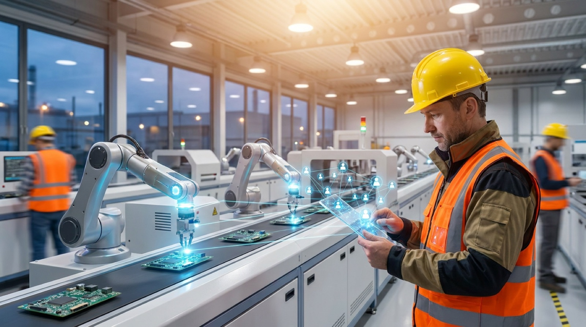

"Today we can say that agentic AI has arrived, that useful AI has arrived."
— Jensen Huang, CEO of NVIDIA, GTC Taipei keynote, June 2026
Three days after Jensen Huang said those words, NVIDIA put a real factory behind them. On June 4, 2026, at GTC Taipei, NVIDIA unveiled FOX, the Factory Operation Blueprint, a reference design for autonomous factory-manager AI. Foxconn, the world's largest electronics contract manufacturer, is already running it under the name MoMClaw, a manufacturing operations multi-agent system that connects hundreds of specialized AI agents directly to production equipment, sensors, and ERP data. Foxconn's own projections: an 80% improvement in root-cause analysis time, a 15% increase in labor productivity, and a 10% decrease in machine failure rates. Here is what MoMClaw actually is, how it fits into NVIDIA's broader push to put AI agents on the shop floor, and what is verified versus simply projected.

Hundreds of Agents, One Factory Floor
MoMClaw is not a single chatbot bolted onto a dashboard. It is an agentic layer that sits across an entire plant: sensors, machine signals, quality systems, and ERP data all feed into a network of hundreds of specialized agents, each handling a narrow task such as monitoring a specific line, flagging an anomalous vibration pattern, or cross-referencing a defect against historical maintenance records. Plant managers and operators interact with the whole system through a natural-language interface, asking questions and getting back real-time answers and concrete action plans, with NVIDIA's OpenShell privacy controls and safety guardrails governing what each agent can see and do.
The shift this represents is subtle but important. Traditional factory software surfaces dashboards and alerts; a human still has to connect the dots across systems to figure out what actually went wrong. MoMClaw's agents do that correlation work continuously, in the background, and present the synthesis rather than the raw data.
The Hardware Underneath: DGX Station and the GB300 Superchip
None of this runs on ordinary factory PCs. FOX is optimized for NVIDIA's DGX Station, built around the GB300 Grace Blackwell Ultra superchip: a Blackwell Ultra GPU connected to a Grace CPU over NVLink-C2C, delivering 20 petaflops of FP4 performance and 748 GB of coherent memory, enough to run models with up to a trillion parameters locally on the factory floor rather than in a distant cloud region. That matters for manufacturing specifically: production lines cannot tolerate the latency or connectivity risk of sending every sensor reading to a remote data center before an agent can act on it.
It is also a reminder of how much physical infrastructure sits underneath every "AI agent" headline. We covered the scale of that buildout when Tesla broke ground on its own AI chip fab to feed exactly this kind of compute demand. MoMClaw is one of the first concrete examples of what all that silicon is actually for: not bigger chatbots, but agents wired directly into physical production.
The Numbers Foxconn Is Betting On
The headline figures are striking. Foxconn projects that MoMClaw will deliver an 80% improvement in root-cause analysis time, meaning the time it takes to trace a defect or failure back to its origin on the line. It also projects a 15% increase in labor productivity and a 10% decrease in machine failure rates, the kind of compounding gain that, across Foxconn's scale of operations, would translate into a meaningful shift in manufacturing economics.
Key Takeaway
These numbers, 80% faster root-cause analysis, 15% more productivity, 10% fewer failures, are Foxconn's own projections tied to the FOX rollout, not figures from an independent audit. They describe an expected outcome of deploying the system at scale, and should be read as a company's confident bet on its own technology rather than a measured, third-party result.
FOX Is Spreading Across Taiwan's Electronics Supply Chain
Foxconn is the headline name, but FOX is designed as a blueprint, not a one-off deployment, and other major contract manufacturers are already building on it. Pegatron is projecting a 15% reduction in asset redundancy costs through more efficient robot utilization. Advantech expects a 10% reduction in energy consumption from autonomous HVAC and lighting management agents. Wistron is building surface-mount-technology agents for real-time root-cause analysis and quality control on its assembly lines.
A layer of specialized software partners is building the individual agents that plug into FOX. DeepHow is targeting a 3% improvement in first-pass yield for assembly operations. Spingence reports 99.6% defect recall with a 78% reduction in defect escapes and a 3x increase in inspection capacity. Overview AI claims a 12x faster deployment time for visual inspection models, and Roboflow is generating synthetic defect imagery to train those models faster. Together, this looks less like a single product launch and more like the formation of an entire agentic-manufacturing ecosystem around one reference architecture.
From Chatbot to Shop-Floor Operator: A Different Kind of Agent
It is worth being precise about what makes MoMClaw different from the AI agents most people have used so far. A chatbot answers a question and stops. The agents we described in our piece on autonomous AI agents executing multi-step work inside the enterprise go further, chaining steps together to complete a task. MoMClaw's agents go further still: they run continuously, each owning a narrow slice of a physical process, and an orchestrator agent coordinates quality, logistics, and safety sub-agents in natural language, much like the observe-plan-act-reflect loop we described as the core mechanism behind agentic AI, except here the "act" step can mean adjusting a machine setting or flagging a robot for maintenance, not just calling an API.
Why This Is a Bigger Deal Than Another Copilot
Most enterprise AI rollouts so far have targeted knowledge work: drafting documents, summarizing meetings, answering questions about ERP data. MoMClaw is one of the first large-scale examples of agentic AI directly supervising physical production equipment, with real-time sensor feeds and the ability to trigger maintenance actions. That is a different risk and reward profile than a copilot that drafts an email.
What This Means for Manufacturing Jobs
A 15% labor productivity gain is good news for Foxconn's margins, but it raises the obvious question for the people on the floor: productivity gains of that size eventually show up either as more output per worker, fewer workers per unit of output, or both. This is the same tension we explored in our look at how careers are being reshaped by continuous waves of automation and reskilling: the workers most exposed are not necessarily the ones doing the most repetitive tasks, but the ones whose job has historically been to notice patterns and connect information across systems, exactly the work MoMClaw's agents are designed to do.
In the near term, the more likely outcome is a shift in what factory roles look like rather than an outright reduction: technicians spend less time chasing down the source of a defect and more time acting on the agent's diagnosis, supervising the agents themselves, and handling the exceptions the system flags as uncertain.
What This Means for Enterprise Leaders
For executives outside electronics manufacturing, MoMClaw is a preview of where agentic AI is headed once it moves past back-office automation. The pattern, an orchestrator agent coordinating a swarm of narrow specialist agents, each grounded in real operational data, with a natural-language interface for humans to query and direct the system, is general enough to apply to logistics networks, energy grids, and complex IT operations, not just assembly lines.
The practical takeaway is to treat the 80/15/10 figures as a direction, not a guarantee. Any organization evaluating a similar agentic deployment should ask the same three questions FOX's own case studies invite: what data is the agent layer actually grounded in, what guardrails govern what it is allowed to act on unsupervised, and how will the projected gains be measured once the system is live rather than assumed in advance.